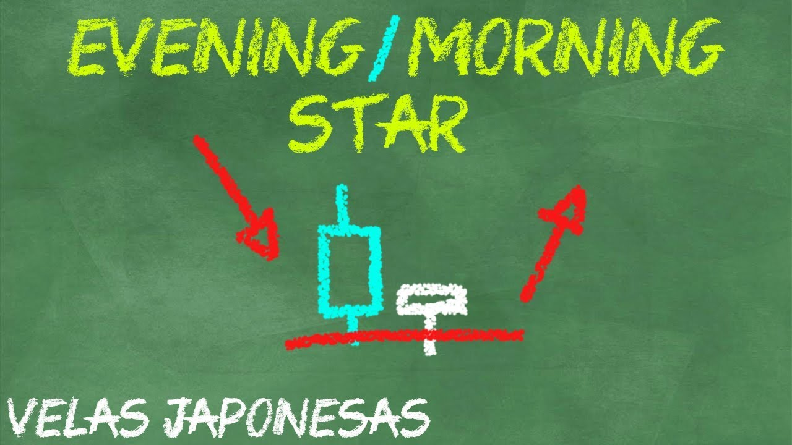

Estrella de la Mañana y Estrella de la Tarde
Ya hemos aprendido a reconocer varios patrones de velas ¿no es así?, pues este es bastante particular y muy común de encontrar, pero, siempre hay un «pero», puede ser algo engañoso.
Empecemos a conocer al patrón en sí:

El patrón estrella de la tarde se da al final de una tendencia alcista y nos muestra el posible cambio de tendencia. El patrón estrella de la mañana se encuentra al final de una tendencia bajista y nos indica un posible inicio de la tendencia alcista.
Cómo puedes observar, este patrón esta compuesto por 3 VELAS, es muy importante que identifiquemos esto.
La estrella de la mañana (Morning Star) esta compuesta por una vela bajista, una vela de indecisión (mucho mejor si es un doji) y una vela de decisión alcista, el doji debe estar en un nivel de soporte para mayor confianza.
La estrella de la tarde (Evening Star) esta compuesta por una vela alcista, una vela de indecisión (mucho mejor si es un doji) y una vela de decisión bajista, el doji debe encontrarse en un nivel de resistencia para mayor confianza.
Cómo puedes observar, el patrón incluye cómo segunda vela un Doji o una vela de indecisión, por lo que nosotros podemos empezar a operar desde esta oportunidad.
A veces estamos dudosos de operar el doji, por lo que podemos esperar a que mejor se forme por completo la estrella.
Recuerda, al ser un patrón de reversión es muy importante que se encuentre en una tendencia saludable, ya que de ir en una tendencia fuerte podría indicar solo un retroceso.
En el siguiente vídeo te explico cómo operar el patrón desde que identificamos el doji:
